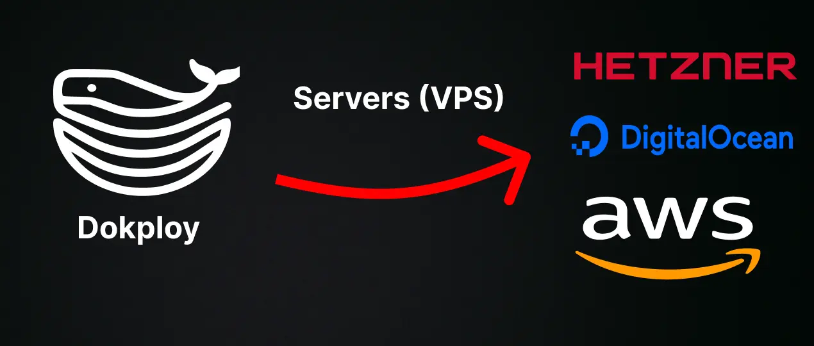
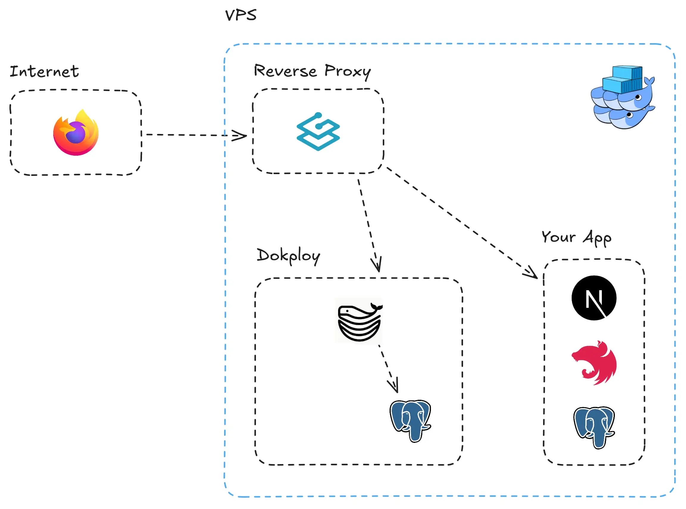
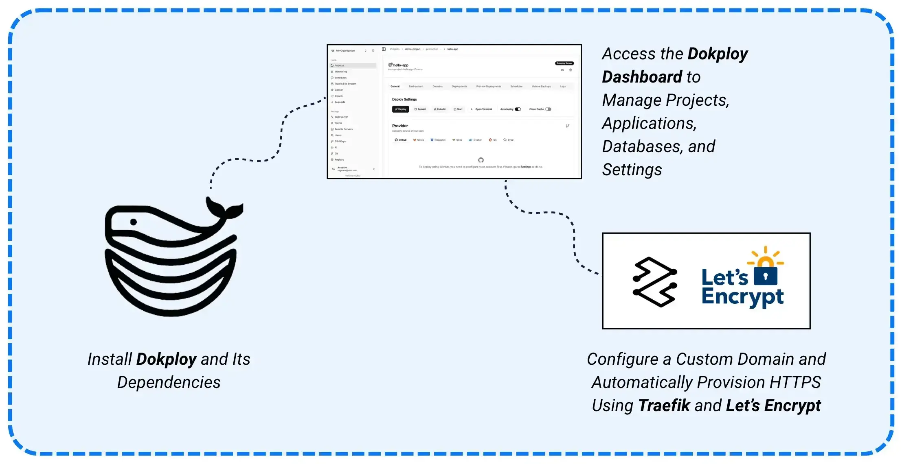

Dokploy: your own PaaS for the price of a VPS
· 5 min read
You have a VPS, a Dockerfile, and a domain. Deploying should take one push. Instead it takes an SSH session, a manual git pull, a Compose file you edit by hand, and a TLS certificate you hope renews itself.
Dokploy puts a control panel on top of that mess. It is a free, open-source platform you install on your own Linux server. Connect a repo, press deploy, and Traefik sends the traffic to the right container.
Quick Summary (The Short Version)
- • A self-hosted PaaS: One install command puts the panel, PostgreSQL, Redis, and Traefik on your Linux server. Docker runs the apps.
- • Deploys what you already have: Git repos, Dockerfiles, Docker Compose, Nixpacks, or Heroku Buildpacks, plus one-click databases and scheduled backups.
- • Free software, paid in time: The software costs nothing. You pay for the VPS and become the person who patches, monitors, and restores it.

What Dokploy actually is
It is a small platform, not a CLI. The install script sets up Docker Swarm, Traefik as the reverse proxy, a Next.js control panel, PostgreSQL, and Redis. You open port 3000 in a browser, create the admin account, and work from there.
The useful part is the glue. Traefik watches Docker and routes each domain to the right container. Dokploy writes those labels for you. That is the same job people hand-roll with nginx, Certbot, and a folder of shell scripts. Here it is one screen.

What one command buys you
The install is short:
curl -sSL https://dokploy.com/install.sh | sudo shThe script installs Docker if missing. Your server needs 2 GB of RAM, 30 GB of disk, and free ports 80, 443, and 3000. If nginx or Caddy already owns 80 or 443, the install fails. Stop it first.
Connect GitHub, GitLab, Bitbucket, Gitea, or a container registry. Pick a build type: Nixpacks, Heroku Buildpacks, a Dockerfile, or a Compose file. Add environment variables and a domain. Traefik handles the certificate.

Databases are one click: PostgreSQL, MySQL, MariaDB, MongoDB, and Redis. Schedule backups to external storage, run cron jobs, keep preview environments, and add servers to the same panel. There is an API, a CLI, an MCP integration for AI tools, and a template library with Plausible, PocketBase, and Cal.com.
None of these features is unique. The pitch is one place, one UI, for free.
The bill is your time
Dokploy is free to install. The server is not, and neither is the attention it needs.
The panel shares the VPS with your apps: one box, one failure domain. If the disk fills or the kernel panics, your dashboard goes down with your site. Backups only count if they leave the machine and you have restored one. Updates are your job too: add sh -s update to the install command.
The installer publishes port 3000, so the panel is reachable at your server's IP. Put the panel behind HTTPS on a domain, then close the public port:
docker service update --publish-rm "published=3000,target=3000,mode=host" dokployOnly run that after the domain works, or you lock yourself out.
The 2 GB minimum is real. Builds are the hungriest part; a busy Node or Rust build can push a 2 GB box into swap. Four GB is a calmer start.
A database container is not a managed database. You get the engine, not automatic failover. SSO, audit logs, and fine-grained roles are Enterprise features, not part of the free install. When something breaks at 2 a.m., you are the support desk.
When it is the right call
Dokploy fits a specific shape of work: you rent a VPS, deploy Docker containers, and run two to ten services. Side projects, internal tools, a small SaaS, a staging box. It is also a good answer when data has to stay on your own hardware.
A single static page is a bad fit. Cloudflare Pages, Netlify, or Vercel host that for free, with a CDN and no server to patch. It is also a bad fit if you need Kubernetes, a managed database with failover, or a written uptime guarantee.
The closest comparison is Coolify. Both are open source, put a UI on Docker, and can use Traefik. The difference you will feel is in build behaviour, backup flow, and the small edges of the UI. Test your own Compose file on both before you move a live service.
Dokploy also sells a managed control plane; your apps stay on your servers.
What it is not
- Not managed. The free install has no SLA. The server, updates, and restores are yours.
- Not Kubernetes. Multi-node runs on Docker Swarm. If you need the Kubernetes ecosystem, use Kubernetes.
- Not a CDN. There is no edge network. Static assets still benefit from a CDN in front.
- Not a database with failover. A database container on one VPS is one copy unless you build more.
- Not zero-maintenance. Expect to read logs, apply updates, and test restores.
The takeaway
Dokploy is worth an evening if you already pay for a VPS and deploy more than one container. It replaces hand-written nginx, Certbot, and deploy scripts with one panel you can understand. It does not replace the person who runs it.
This week, spin up a throwaway VPS, install it, deploy one small app, then destroy the box. Two hours will tell you more than any review.
Links: Dokploy, the documentation, the source on GitHub.
Docs-first look: I read the install path and docs, but did not run a production migration.